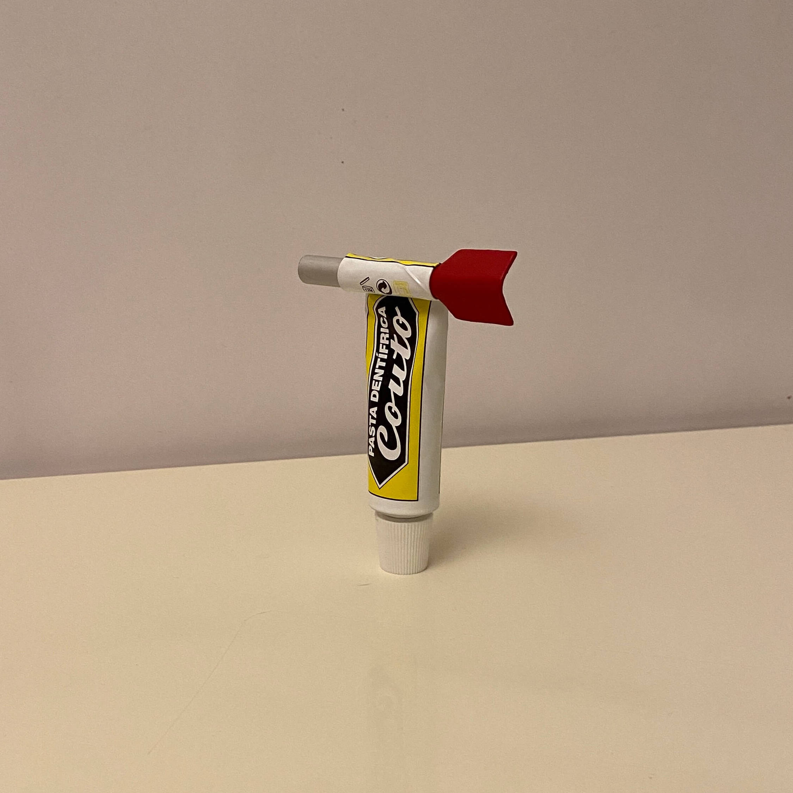
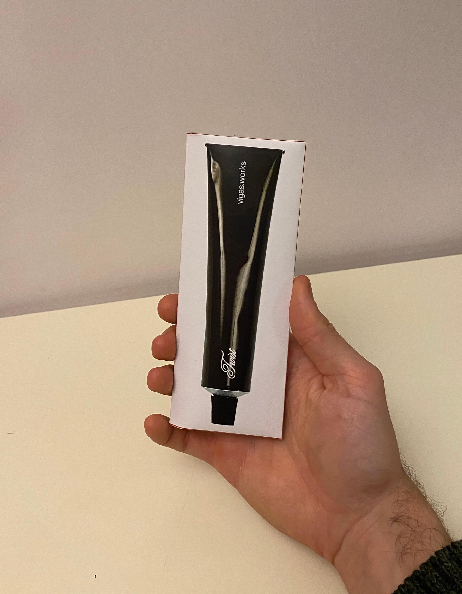
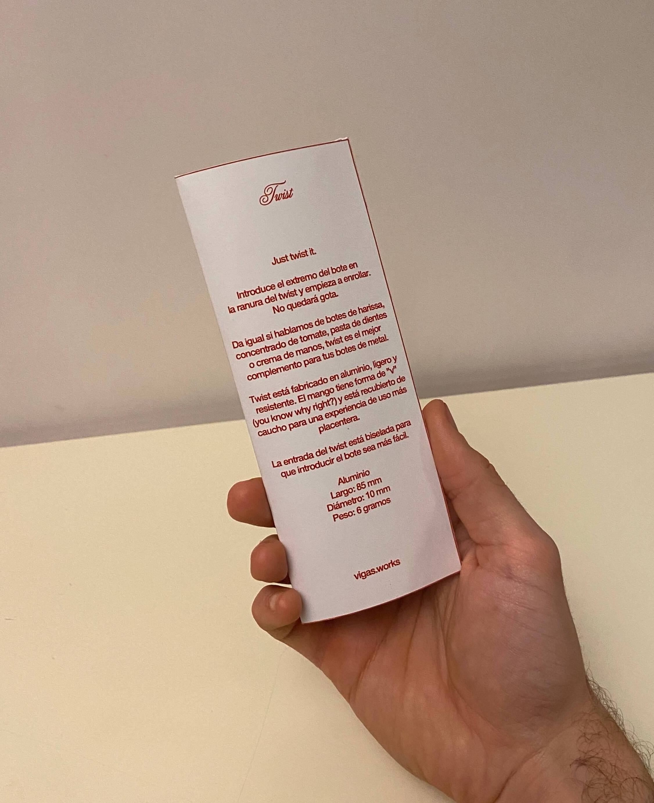
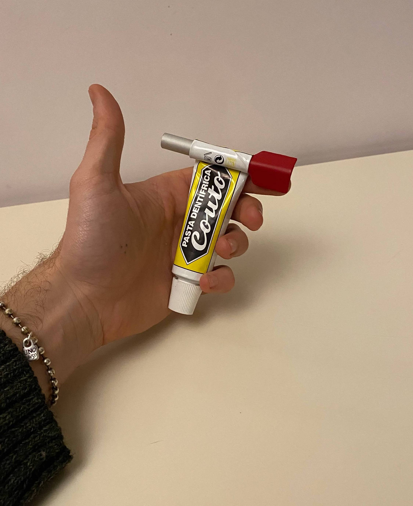
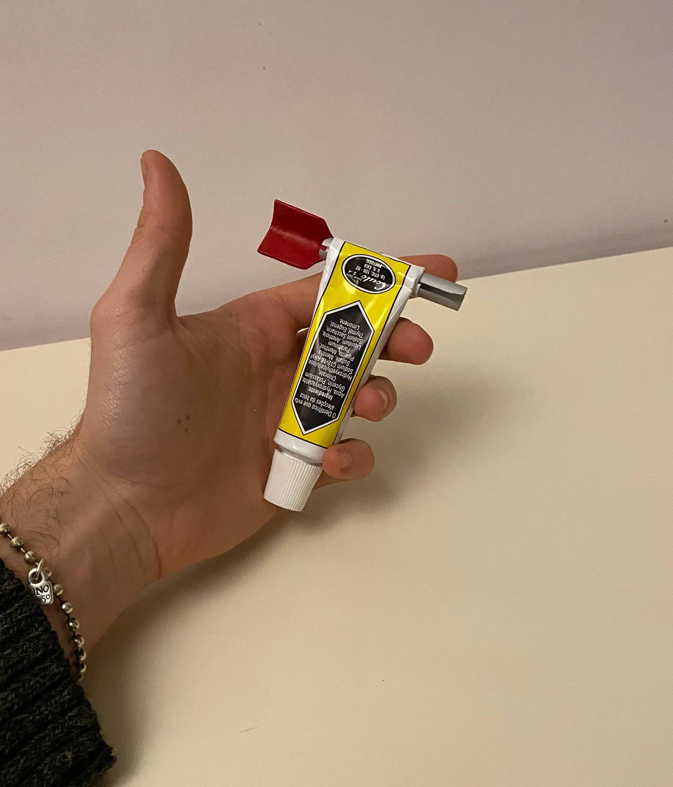
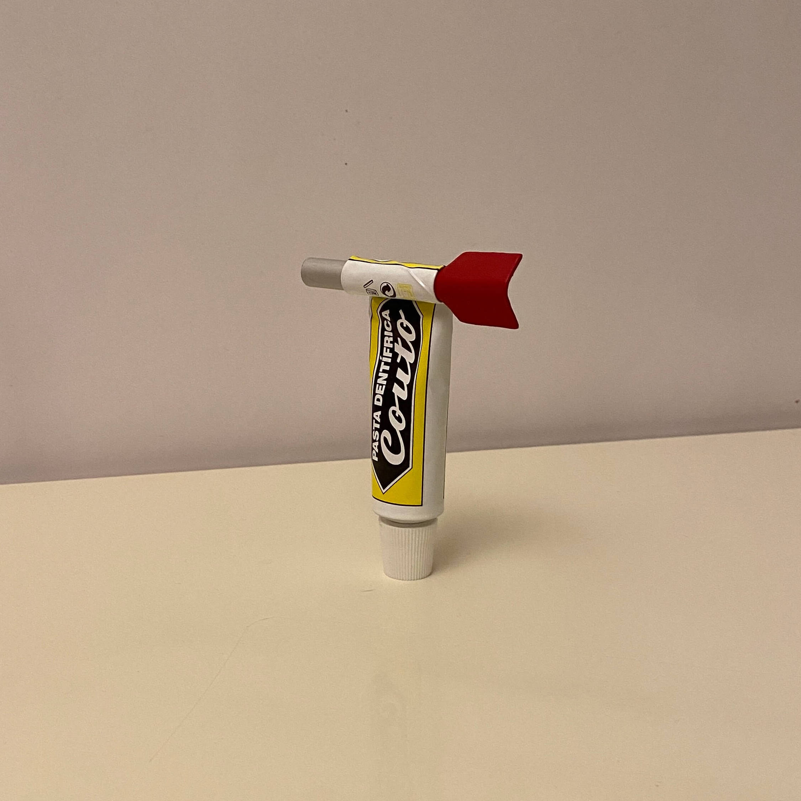
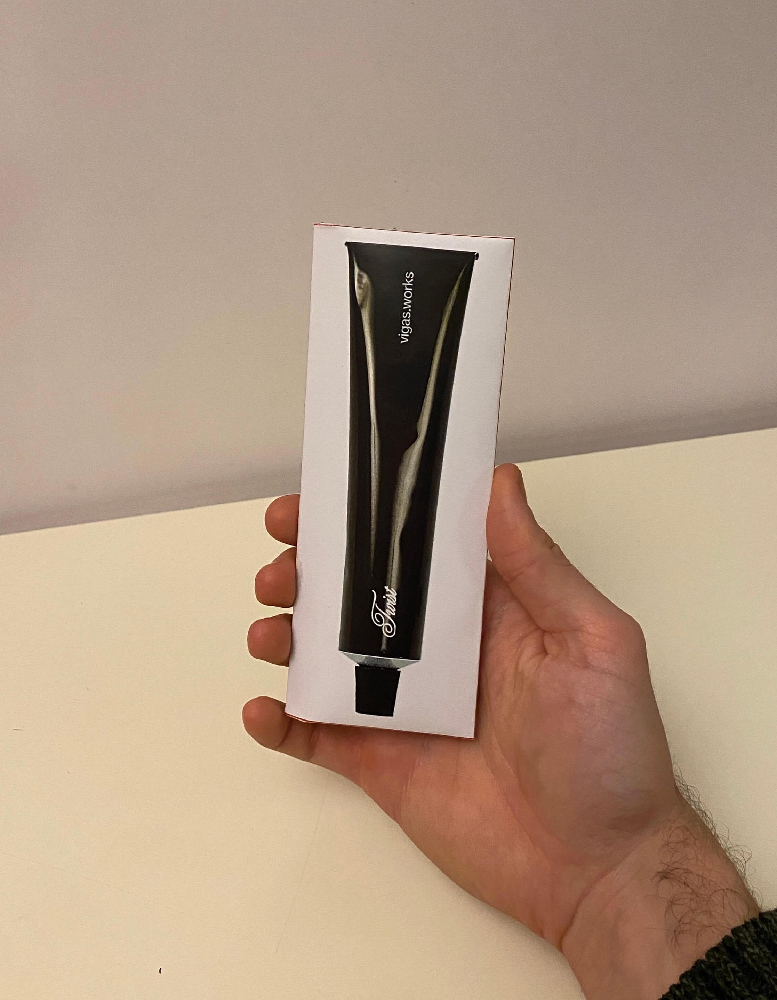
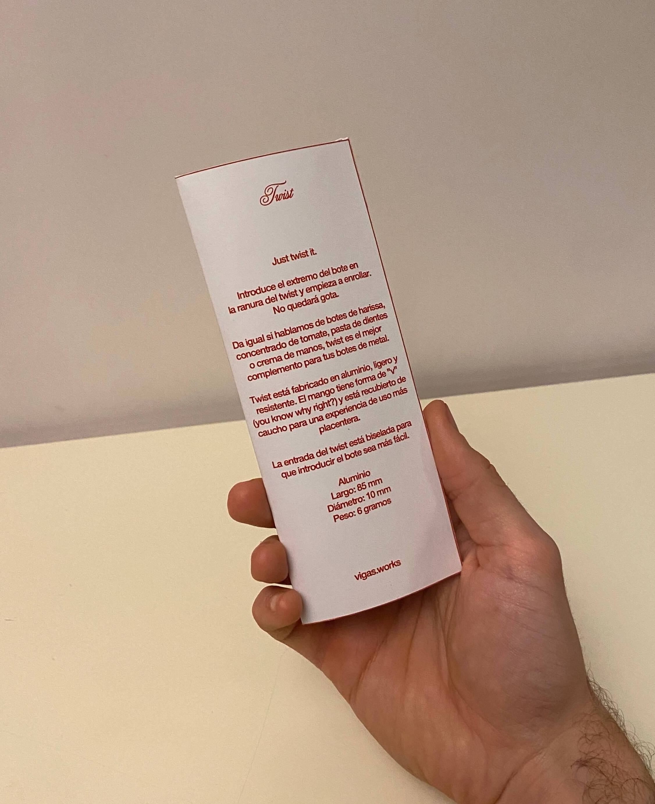
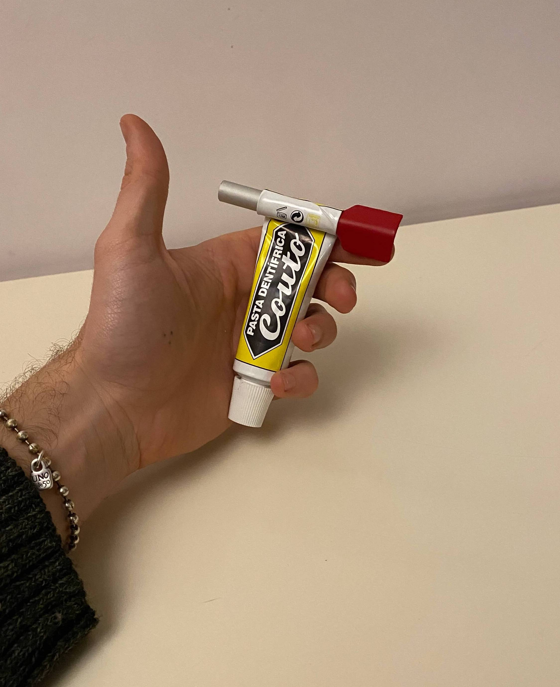
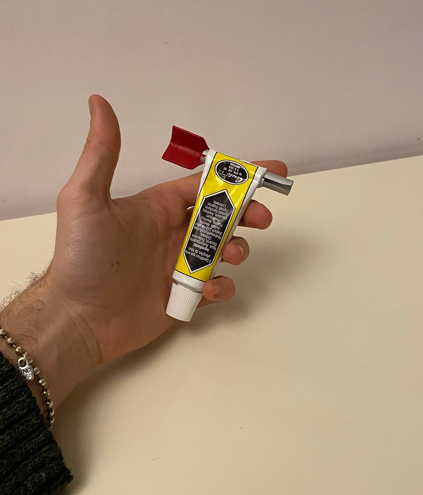

Bitsnbobs
Ya tienes las cosas, ahora solo es cuestión de organizarlas.
Bitsnbobs es un organizador de acero al que tu desorden teme. Es capaz de sembrar el orden donde antes solo había caos. Puedes utilizarlo en la cocina, en el taller, en el escritorio, en el estudio, en la habitación... Tiene tres compartimentos y en él puedes meter desde herramientas hasta bolígrafos, pasando por espátulas de cocina o cubiertos.
Bitsnbobs es estable, mucho, gracias a su base más ancha. No hay cosa que odie más que cuando pones un objeto más alto que el recipiente y este se vuelca por el peso. Bitsnboobs no le teme a eso. También puedes pegarle imanes, para sujetar notas si lo tienes en la oficina, o para pegar el temporizador como en las fotos.
Son tres piezas de acero, el cuerpo, la base y el divisor. La base está hecha en EVA para que apoyarlo sea una experiencia placentera, y para que no raye las superficies. El logo de vigas.works está incrustado en la base, por debajo de la goma EVA.
La entrada del twist está biselada para que introducir el bote sea más fácil.
Roblón es perfecto para estrujar botes de plástico, twist es perfecto para los de metal.
Cada twist viene empaquetado.
Consulta aquí la información sobre el envío.
Aluminio
Largo: 85 mm
Diámetro: 10 mm
Peso: 6 gramos
*Pasta de dientes no incluida.
Objeto bajo pedido
105€

 








